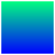

winter
Winter colormap array
- 
Syntax
Description
c = winter returns the winter colormap as a three-column array with the
same number of rows as the colormap for the current figure (gcf). If no figure exists, then the
number of rows is equal to the default length of 256. Each row in the array contains
the red, green, and blue intensities for a specific color. The intensities are in
the range [0,1], and the color scheme looks like this image.

Examples
Plot a surface and assign the winter colormap.
surf(peaks);
colormap('winter');
Get the winter colormap array and reverse the order. Then apply the modified colormap to the surface.
c = winter; c = flipud(c); colormap(c);

Get a downsampled version of the winter colormap containing only ten colors. Then display the contours of the peaks function by applying the colormap and interpolated shading.
c = winter(10);
surf(peaks);
colormap(c);
shading interp;